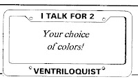

License Frames
5/27/2009
Question: Clinton, Does that wonderful storage shed of yours happen to have any more of the ventriloquist license plate frames left in it? The one I received from the "grab bag" boxes you sold a few years back was attacked by a runaway grocery cart and broke. It was good advertising. I actually had fun reading people's lips through the rear view mirror as we sat at red lights as they read ventriloquist! Jeff Scott
{kind=link}

* * * * * *
Answer: Dr. Jeff, The "Grab Bag" boxes we sold in 2003 & 2006 contained the last of my supply of ventriloquist License frames. Sorry! Mine got broken, too, a number of years ago, and I can only wish it had been a runaway grocery cart that was the cause rather than a "bumper-to-bumper" event! The frames you refer to were made of plastic and came in a choice of colors. But way back in the 1970s we had some made of metal with the wording, "N.A.A.V. Ventriloquist". They were nice. But years of weather and road wear and tear finally forced me to discard mine. Clinton